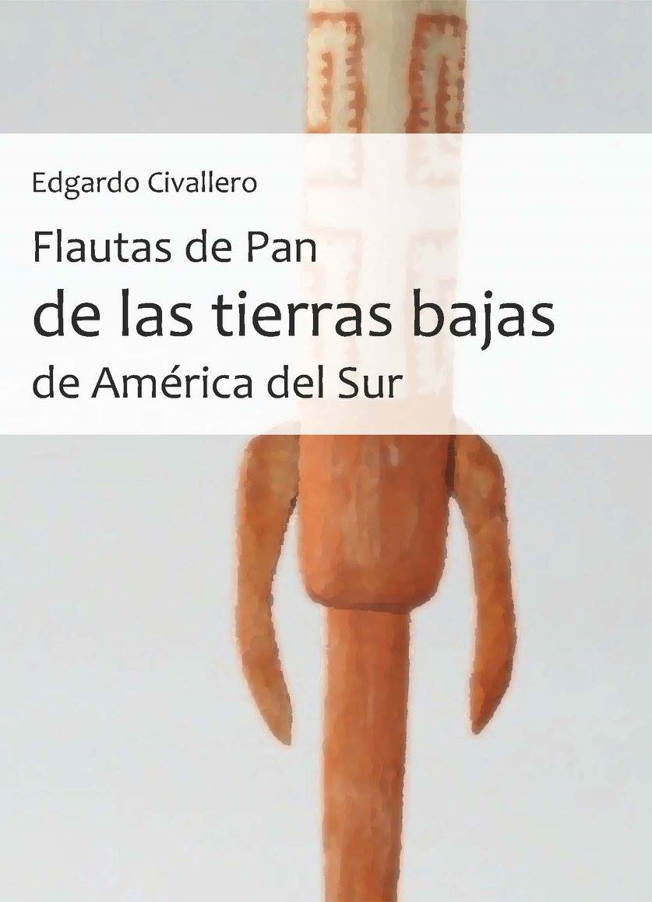

Flautas de Pan de las tierras bajas de América del Sur
Inicio > Libros digitales sobre música > Flautas de Pan de las tierras bajas de América del Sur
Cómo citar este trabajo: Civallero, Edgardo (2025). Flautas de Pan de las tierras bajas de América del Sur. Archive edition. Bogotá: El Zorro de Abajo Editora.
Descargar en PDF.
Este libro constituye un estudio completo sobre la presencia, diversidad y función de las flautas de Pan en las tierras bajas de América del Sur, desde las Guayanas hasta la Amazonía peruana y brasileña, pasando por las cuencas del Orinoco y el Amazonas, los Llanos y la franja atlántica colombiana. A lo largo de docenas de registros etnográficos, el texto traza una cartografía organológica y cultural de estos aerófonos, presentándolos no como simples artefactos musicales, sino como documentos de memoria, cosmología y relación ambiental.
El trabajo parte de una descripción general que contrapone las flautas de Pan andinas —de doble hilera, complementarias y ritualizadas— con las de las tierras bajas, caracterizadas por su estructura simple de tubos en una sola hilera y por una diversidad material y sonora abrumadora. Allí aparecen instrumentos construidos en caña, hueso, plumas o incluso madera de balso, ensamblados con fibras de chambira, algodón o curagua, y decorados con tintes, ceras y tejidos vegetales. La ejecución es generalmente colectiva: los instrumentos dialogan en parejas o grupos, alternando frases melódicas en forma de hocket. En esa práctica, cada flauta —"hembra", "macho", "prima"— cumple una función específica dentro de un tejido polifónico que encarna el principio comunitario de la música indígena.
La obra repasa el mapa continental de estas tradiciones, comenzando por las Guayanas, donde los Kari'ña, Galibi y Kali'na usaban las verékushi o veréecushi, flautas de 3 a 6 tubos que acompañaban danzas rituales como el maremare. Estas tradiciones, descritas por cronistas desde el siglo XVI, declinaron con la colonización y el proceso de aculturación, aunque perviven en variantes criollas como los carrizos de Cumanacoa o los de San José de Guaribe, integrados hoy a repertorios festivos venezolanos.
El análisis se desplaza luego por los pueblos de la cuenca del Orinoco, donde aparecen los hani tahuibo de los Hodï, las are're' de los Panare y las suduchu o seku seku de los Ye'kuana, asociadas a ritos de iniciación, danza o bebida colectiva. En esa misma zona, los Guahibo o Jiwi desarrollan las jivabürrü, flautas "macho" y "hembra" que simbolizan el matrimonio mediante el intercambio de tubos, y cuya música alternada expresa tanto un principio sonoro como social. Entre los Yukpa, en la Serranía del Perijá, las jok'ku de 5 a 8 tubos se utilizan en ceremonias agrícolas y fúnebres, recordando la función de mediación entre el ciclo vital y la sonoridad.
En el ámbito colombiano, el texto distingue tradiciones amazónicas, andinas, atlánticas y pacíficas. Los Desano, Tukano, Cubeo o Siriano del Vaupés tocan las cariço, peduba o weworo, flautas colectivas de 7 a 12 tubos, ligadas a los rituales dabucuri y a las danzas comunales. Los Witoto interpretan las reribakui, asociadas al mito del creador Buinaima, mientras los Siona tocan capadores de 20 tubos. En la costa del Pacífico, los Wounaan y Épera ejecutan las tokeemie o siru, en contextos de rogativas y curación, mientras que en la Sierra Nevada los Ika y Kogi utilizan las púnkiri y punshaka.
El panorama brasileño es aún más vasto: más de treinta pueblos quedan documentados con sus respectivas flautas, entre ellos los Xavante, Waura, Kamayurá, Salumã, Irantxe, Paresí, Parkatêjê, Mehinako o Waiwai. Las estructuras varían de dos a más de diez tubos, y su función oscila entre lo ritual y lo festivo. Se mencionan, por ejemplo, las iapojatekana de los Waura, tocadas en la ceremonia hohogá; las katetiri de los Manoki, usadas tras competiciones deportivas; y las tsidupu de los Xavante, que acompañan los ritos de iniciación danhono. Cada descripción combina datos organológicos —materiales, número de tubos, afinaciones— con observaciones etnográficas sobre contextos de ejecución, roles de género, repertorios y tabúes.
En Perú, la obra muestra un paisaje igualmente denso: las siroro de los Bora, con su cuerpo de balso en forma de pez; las hetupe de los Maijuna, las dudumuta de los Yagua o las oruubi de los Ocaina, entre muchas otras, conforman un repertorio donde cada flauta se enlaza a un mito, una ceremonia agrícola o una fiesta. Estos instrumentos, más allá de su morfología, revelan una continuidad amazónica que desafía las fronteras nacionales y las jerarquías coloniales del conocimiento musical.
Esta guía no se limita a recopilar datos: configura un atlas de memoria sonora, donde cada flauta actúa como testimonio de una relación particular entre cuerpo, paisaje y comunidad. El tono del texto es descriptivo y riguroso, pero también sensible a la pérdida: las menciones a instrumentos extintos o en declive funcionan como registro de un patrimonio amenazado. El resultado es una obra de referencia, que combina arqueología musical, lingüística, etnografía y documentación fotográfica, y que restituye a las flautas de Pan de las tierras bajas sudamericanas su lugar legítimo en la historia de la música del continente.